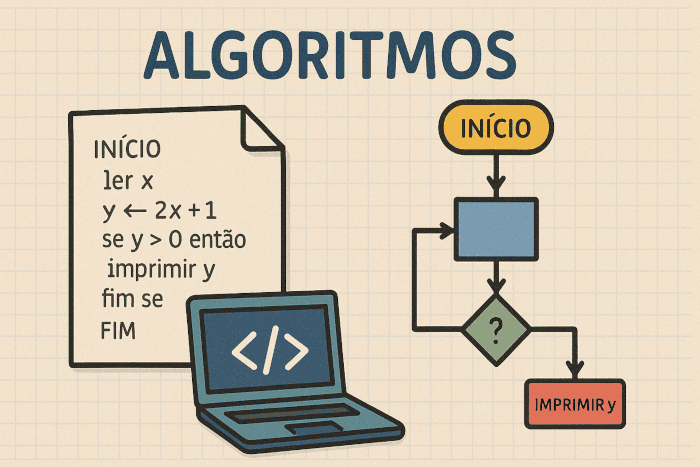

O que é Algoritmo?
Um algoritmo é um conjunto organizado de instruções lógicas, finitas e bem definidas, elaborado para executar uma tarefa específica. Ele descreve, passo a passo, como resolver um problema ou alcançar um determinado resultado.
Os algoritmos podem ser utilizados para processar informações, organizar dados, automatizar decisões e otimizar processos, sendo fundamentais no desenvolvimento de sistemas computacionais e na solução de problemas do cotidiano.

Quais seus benefícios?
Ao compreender o que é um algoritmo e como ele funciona, torna-se mais fácil perceber sua importância no dia a dia. Mais do que simples sequências de instruções, os algoritmos são ferramentas essenciais. A seguir, serão apresentados os principais benefícios do uso de algoritmos.
- Aumento da produtividade
- Automatização de processos
- Redução de erros humanos
- Escalabilidade
- Padronização
Em conclusão, os algoritmos desempenham um papel fundamental na organização e na execução de tarefas, tanto na área da tecnologia quanto no cotidiano. Eles permitem resolver problemas de forma estruturada, eficiente e precisa, garantindo melhores resultados e reduzindo erros.
Quais são os 3 tipos de algoritmos?
Para que um algoritmo funcione de maneira organizada e eficiente, ele é estruturado a partir de diferentes tipos de estruturas lógicas que definem como as instruções serão executadas.
- Algoritmo sequencial: executa as instruções em ordem, do início ao fim, sem desvios;
- Algoritmo condicional: avalia condições para seguir diferentes caminhos, com base em “se… então…”;
- Algoritmo de repetição: executa um conjunto de instruções diversas vezes, até que uma condição seja satisfeita.
Dominar essas estruturas significa entender a lógica que sustenta todo programa de computador. Independentemente da linguagem utilizada, seja ela simples ou mais complexa, todas se baseiam nesses mesmos princípios estruturais. Por isso, o estudo das estruturas de algoritmos é a base para qualquer linguagem de programação, servindo como alicerce para a criação de sistemas eficientes, organizados e funcionais.